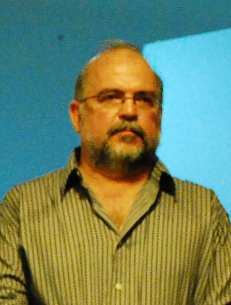
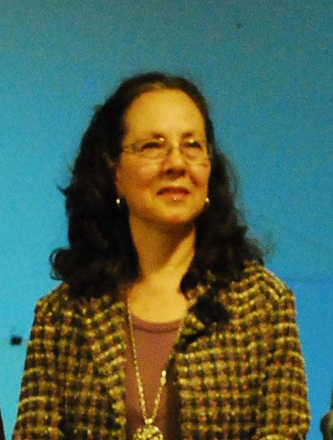
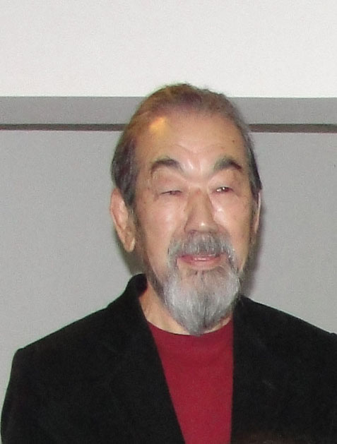
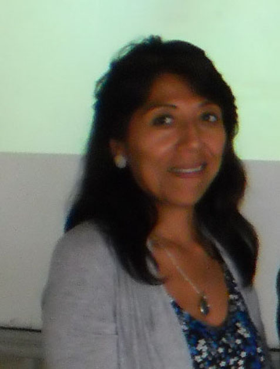

Curadoria e Júri

Paulo Cheida Sans
Curador e Membro das Comissões de Seleção e Premiação
Paulo de Tarso Cheida Sans nasceu em Campinas, SP. Professor do Curso de Artes Visuais da PUC-Campinas. Mestre em Filosofia da Educação pela PUC-Campinas e Doutor em Artes Visuais pela Unicamp. Diretor e curador do Museu Olho Latino, Atibaia, SP.
Clique e leia um breve currículo
Principais participações:
Participou de cerca de 500 mostras. Recebeu 41 prêmios em Salões de Artes no Brasil e 3 no exterior (Portugal, Estados Unidos e França). Participou da Mostra Rio Gravura – Palácio Gustavo Capanema, Rio de Janeiro, RJ (1999), do Panorama de Arte Atual no MAM São Paulo (1980), e de vários salões oficiais em São Paulo, Curitiba, Belo Horizonte, Porto Alegre, Recife e outros. Participou em 6 edições do Prêmio Internacional de Desenho Juan Miró em Barcelona e suas gravuras foram expostas em inúmeros eventos importantes, tais como: The Hanga Anual no Museu Metropolitano de Tóquio, Japão e na Trienal Internacional de Gravura em Vasa, Finlândia.
Suas obras figuram em diversos acervos, entre os quais: Embaixada do Brasil em Ottawa, Canadá; Cooperativa de Atividades Artísticas Árvore, Porto, Portugal; Museu Nacional de Belas Artes, Santiago, Chile; Casa das Américas, Havana, Cuba; Casa de Humor e Sátira, Gabrovo, Bulgária; Museu Pohjanmaan, Vasa, Finlândia; Museu de Arte Contemporânea de São Paulo; Museu da Gravura, Curitiba; Museu de Arte Contemporânea, Curitiba; Museu de Arte de Brasília; Caixa Cultural – Brasília e Casa da Cultura da América Latina - Universidade de Brasília.
Organizou inúmeros eventos atuando como curador: Grabados Argentinos Hoy - Brasília; Grabados & Brasil - Havana, Cuba; Grabados & Gravuras – Universidade Laval – Quebec, Canadá, Gravuras do Acervo Caixa - Brasília e outros.
É autor dos livros: Pedagogia do Desenho Infantil (Alínea), Fundamentos para o Ensino das Artes Plásticas (Alínea), A Criança e o Artista (Papirus) e “Aspectos da Arte e da Cultura Popular em Campinas” (PUC-Campinas). Organizou vários livros, entre outros, “Museus da Região Metropolitana de Campinas” (PUC-Campinas).
Principais participações:
Participou de cerca de 500 mostras. Recebeu 41 prêmios em Salões de Artes no Brasil e 3 no exterior (Portugal, Estados Unidos e França). Participou da Mostra Rio Gravura – Palácio Gustavo Capanema, Rio de Janeiro, RJ (1999), do Panorama de Arte Atual no MAM São Paulo (1980), e de vários salões oficiais em São Paulo, Curitiba, Belo Horizonte, Porto Alegre, Recife e outros. Participou em 6 edições do Prêmio Internacional de Desenho Juan Miró em Barcelona e suas gravuras foram expostas em inúmeros eventos importantes, tais como: The Hanga Anual no Museu Metropolitano de Tóquio, Japão e na Trienal Internacional de Gravura em Vasa, Finlândia.
Suas obras figuram em diversos acervos, entre os quais: Embaixada do Brasil em Ottawa, Canadá; Cooperativa de Atividades Artísticas Árvore, Porto, Portugal; Museu Nacional de Belas Artes, Santiago, Chile; Casa das Américas, Havana, Cuba; Casa de Humor e Sátira, Gabrovo, Bulgária; Museu Pohjanmaan, Vasa, Finlândia; Museu de Arte Contemporânea de São Paulo; Museu da Gravura, Curitiba; Museu de Arte Contemporânea, Curitiba; Museu de Arte de Brasília; Caixa Cultural – Brasília e Casa da Cultura da América Latina - Universidade de Brasília.
Organizou inúmeros eventos atuando como curador: Grabados Argentinos Hoy - Brasília; Grabados & Brasil - Havana, Cuba; Grabados & Gravuras – Universidade Laval – Quebec, Canadá, Gravuras do Acervo Caixa - Brasília e outros.
É autor dos livros: Pedagogia do Desenho Infantil (Alínea), Fundamentos para o Ensino das Artes Plásticas (Alínea), A Criança e o Artista (Papirus) e “Aspectos da Arte e da Cultura Popular em Campinas” (PUC-Campinas). Organizou vários livros, entre outros, “Museus da Região Metropolitana de Campinas” (PUC-Campinas).

Celina Carvalho
Membro da Comissão de Seleção
Celina Aparecida Carvalho nasceu em Campinas, SP. Formada em Educação Artística - habilitação Desenho – pela Pontifícia Universidade Católica de Campinas (1978).Participou de vários Congressos e Cursos de Artes. Ministrou cursos para professores de Educação Artística. Organizou várias exposições nacionais e internacionais. Diretora Adjunta do Museu de Arte Olho Latino, Estância de Atibaia, SP. Membro da Academia Campineira de Letras e Artes. Integrante do Centro Campineiro de Artes Folclóricas. Membro da Diretoria do CPAC – Centro de Poesia e Arte de Campinas.
Clique e leia um breve currículo
Principais Participações:
2010 – “Grabado: Espacios Liberados” - ICPNA – San Miguel – Lima, Peru; “Agregados – Grupo Olho Latino” – Taller Kimkilen – Lima, Peru; “Estampa 2010 Bolívia - Brasil”. Sala de Exposições da Faculdade de Arquitetura de la Universidad Mayor de San Andrés (UMSA) - La Paz, Bolívia; “Apreços – Gravuras do Acervo Olho Latino” Pinacoteca Municipal “Miguel Dutra” - Piracicaba, SP.
2009 – “Gracias a la vida ...” - Artistas do Grupo de Arte do Museu Olho Latino. Hall da Biblioteca da Faculdade de Arte da Pontifícia Universidade Católica do Peru – Lima, Peru; “Apreços – Gravuras do Acervo Olho Latino” - Museu de Arte Contemporânea de Campinas, SP; “4ª Bienal Nacional de Gravura - Olho Latino” - Centro de Convenções “Victor Brecheret” - Atibaia, SP; “Amarras” - Artistas do Grupo de Arte do Museu Olho Latino - Centro Municipal de Cultura Afro-Brasileira “Odette dos Santos” – São Carlos, SP; “Apreços – Gravuras do Acervo Olho Latino” - Pinacoteca Municipal de Amparo “Dr. Constancio Cintra” - Amparo, SP e Laboratório das Artes – Franca, SP.
2008 – “Percurso Enigmático” (Individual) – Galeria de Arte da Faculdade de Artes Visuais – PUC-Campinas, SP e Espaço Olho Latino no Museu “João Batista Conti” – Atibaia, SP; Gravura Latino – Americana - Centro Municipal de Cultura Afro-Brasileira “Odette dos Santos” – São Carlos, SP.
2010/07/05/03/01 - 5ª, 4ª, 3ª, 2ª, 1ª Bienal do Esquisito – Centro de Convenções “Victor Brecheret” - Atibaia, SP, e SESC Campinas, SP.
2006 - “7º Bharat Bhavan International Biennial of Print Art”, Índia; “Prêmio Destaque” - 31ª Semana de Portinari - Museu Casa Portinari, Brodowski, SP.
Grabados & Gravuras - 16° Encontro Nacional de Educadores em Paulínia - Câmara Municipal – Paulínia, SP.
2005 – “Tokyo International Mini-Print 2005” – Tama University – Tóquio, Japão; “Parábolas para o Século XXIII” - Artistas do Núcleo Olho Latino – Capela do Morumbi – São Paulo, SP;
2005/04 - “Grabados e Gravuras – Aspectos da Gravura no Acervo Olho Latino” – Caixa Cultural – São Paulo, SP, Rio de Janeiro, RJ, Curitiba, PR, Brasília, DF.
2004/ 03/ 02 / 98 - 24º, 23°, 22º, 18° Print Internacional de Cadaqués, Girona, Espanha. 2002 - Wingfield Arts - Wingfiel – Inglaterra; L’Etang d’Art - Bages – França. 2004 – “Sincronia dos opostos” - (Individual Simultânea) – SESC – São Carlos, SP e Capela do Morumbi, São Paulo, SP.
2003 – “inPrensa” – Núcleo de Gravura do Rio Grande do Sul – Museu da Comunicação Social “Hipólito José da Costa” – Porto Alegre, RS; Narração Visual de um Momento Inefável – SESC – Campinas, SP.
2002 – “Xilo Internacional” – Caixa Cultural – São Paulo, SP, Rio de Janeiro, RJ, Brasília, DF, Salvador, BA.
2001 – “Elevação Suprema” (Individual) – Conjunto Cultural da Caixa – São Paulo, SP. 2000 – “International Engraving Salon” – Florean Museum – Carbonari – Romênia. 1999 – “PUR / IMPUR“ - Aix-en-Pce, França; 1998 - “Grabados & Gravuras” - IV Mostra Latino-Americana de Gravura – Universidade Laval - Quebec - Canadá;
1996 - “2ª Bienal de Arte” - Integración Cultural Panameña - Universidad de Panamá – 1993 – “IV Encuentro Latinoamericano sobre Enseñanza Artistica” - La Habana, Cuba.
Principais Participações:
2010 – “Grabado: Espacios Liberados” - ICPNA – San Miguel – Lima, Peru; “Agregados – Grupo Olho Latino” – Taller Kimkilen – Lima, Peru; “Estampa 2010 Bolívia - Brasil”. Sala de Exposições da Faculdade de Arquitetura de la Universidad Mayor de San Andrés (UMSA) - La Paz, Bolívia; “Apreços – Gravuras do Acervo Olho Latino” Pinacoteca Municipal “Miguel Dutra” - Piracicaba, SP.
2009 – “Gracias a la vida ...” - Artistas do Grupo de Arte do Museu Olho Latino. Hall da Biblioteca da Faculdade de Arte da Pontifícia Universidade Católica do Peru – Lima, Peru; “Apreços – Gravuras do Acervo Olho Latino” - Museu de Arte Contemporânea de Campinas, SP; “4ª Bienal Nacional de Gravura - Olho Latino” - Centro de Convenções “Victor Brecheret” - Atibaia, SP; “Amarras” - Artistas do Grupo de Arte do Museu Olho Latino - Centro Municipal de Cultura Afro-Brasileira “Odette dos Santos” – São Carlos, SP; “Apreços – Gravuras do Acervo Olho Latino” - Pinacoteca Municipal de Amparo “Dr. Constancio Cintra” - Amparo, SP e Laboratório das Artes – Franca, SP.
2008 – “Percurso Enigmático” (Individual) – Galeria de Arte da Faculdade de Artes Visuais – PUC-Campinas, SP e Espaço Olho Latino no Museu “João Batista Conti” – Atibaia, SP; Gravura Latino – Americana - Centro Municipal de Cultura Afro-Brasileira “Odette dos Santos” – São Carlos, SP.
2010/07/05/03/01 - 5ª, 4ª, 3ª, 2ª, 1ª Bienal do Esquisito – Centro de Convenções “Victor Brecheret” - Atibaia, SP, e SESC Campinas, SP.
2006 - “7º Bharat Bhavan International Biennial of Print Art”, Índia; “Prêmio Destaque” - 31ª Semana de Portinari - Museu Casa Portinari, Brodowski, SP.
Grabados & Gravuras - 16° Encontro Nacional de Educadores em Paulínia - Câmara Municipal – Paulínia, SP.
2005 – “Tokyo International Mini-Print 2005” – Tama University – Tóquio, Japão; “Parábolas para o Século XXIII” - Artistas do Núcleo Olho Latino – Capela do Morumbi – São Paulo, SP;
2005/04 - “Grabados e Gravuras – Aspectos da Gravura no Acervo Olho Latino” – Caixa Cultural – São Paulo, SP, Rio de Janeiro, RJ, Curitiba, PR, Brasília, DF.
2004/ 03/ 02 / 98 - 24º, 23°, 22º, 18° Print Internacional de Cadaqués, Girona, Espanha. 2002 - Wingfield Arts - Wingfiel – Inglaterra; L’Etang d’Art - Bages – França. 2004 – “Sincronia dos opostos” - (Individual Simultânea) – SESC – São Carlos, SP e Capela do Morumbi, São Paulo, SP.
2003 – “inPrensa” – Núcleo de Gravura do Rio Grande do Sul – Museu da Comunicação Social “Hipólito José da Costa” – Porto Alegre, RS; Narração Visual de um Momento Inefável – SESC – Campinas, SP.
2002 – “Xilo Internacional” – Caixa Cultural – São Paulo, SP, Rio de Janeiro, RJ, Brasília, DF, Salvador, BA.
2001 – “Elevação Suprema” (Individual) – Conjunto Cultural da Caixa – São Paulo, SP. 2000 – “International Engraving Salon” – Florean Museum – Carbonari – Romênia. 1999 – “PUR / IMPUR“ - Aix-en-Pce, França; 1998 - “Grabados & Gravuras” - IV Mostra Latino-Americana de Gravura – Universidade Laval - Quebec - Canadá;
1996 - “2ª Bienal de Arte” - Integración Cultural Panameña - Universidad de Panamá – 1993 – “IV Encuentro Latinoamericano sobre Enseñanza Artistica” - La Habana, Cuba.

Kenichi Kaneko
Membro das Comissões de Seleção e Premiação
Kenichi Kaneko nasceu em Yokohama. Estudou na Escola de Belas Artes (Chuuou Bijitsu Gakuen) de Tóquio, Japão (1958). Participou de vários movimentos de vanguarda e da primeira exposição da New Ecol de Tóquio (1959). Imigrou para o Brasil em 1960. Kaneko é um dos remanescentes do Grupo Seibi, fundado nos anos 1930 por artistas japoneses como Tomie Ohtake e Manubu Mabe. Como ator, trabalhou em muitos filmes, entre outros: 1979/ 01 - Gaijin -1 e 2 (Tizuka Yamazaki); 1985 -Beijo da Mulher Aranha (Hector Babenco); 1971 - Orfeu Negro (Cacá Diegues). Em novelas, entre outras, integrou o elenco de: De Quina pra Lua (1985/ 86 - TV Globo); Zazá (1997/98 - TV Globo); Cobras e Lagartos (2006 - TV Globo); Água na Boca (2008 - TV Bandeirantes); e atualmente de Morde e Assopra (2011 - TV Globo).
Clique e leia um breve currículo
Principais Exposições Individuais:
Principais Exposições Individuais:
2002 - Inspiração Latino-Americana – Caixa Cultural - São Paulo, SP. 1993 - Yokohama Citizen's Gallery - Yokohama, Japão. 1980 - Itaugaleria - São Paulo, SP; MACC – Campinas, SP. 1976 - Yokohama Citizen's Gallery - Yokohama, Japão. 1971 - Galeria IAB - São Paulo, SP.1968 - Galeria Goeldi - Rio de Janeiro, RJ. 1962 - Galeria Clamoi - São Paulo, SP. 1958 - Galeria Kunnugui - Tóquio, Japão. 1957 - Galeria Giro – Tóquio, Japão.
Principais Exposições Coletivas:
2005/03 - 33º/ 32º Salão Bunkyo - São Paulo, SP.
2002 - Xilo Internacional - Acervo Olho Latino - Caixa Cultural - São Paulo, SP.
1999 - Cotidiano/Arte. O Consumo - Itaú Cultural - São Paulo, SP.
1996 - Exposição dos Pintores Nipo-Brasileiros Contemporâneos - The Museum of Fine Art Gifu – Gifu, Japão; Pintores Nipo-Brasileiros Contemporâneos - Masp - São Paulo, SP; Azabu Art Museum – Tóquio, Japão.
1995 - Pintores Nipo-Brasileiros Contemporâneos - Centro Cultural de Tokushima – Tokushima, Japão; The Niigata Prefectual Museum of Modern Art – Niigata, Japão.
1994 - Arte do Momento - Casa de Las Americas – Havana, Cuba, e Valinhos, SP. Bienal Paulista - Valinhos, SP.
1992 - Arte do Momento - Centro Cultural da Cidade de Mislata – Valencia, Espanha.
1985 - Artistas Japoneses na Coleção do MAC - MAC/USP - São Paulo, SP; Salão de Artes Plásticas Bunkyo - São Paulo, SP.
1984 - Homenagem a Arte da Gravura no Brasil - Itaugaleria – Ourinhos, SP.
1978 - 3 Gerações de Artistas Nipo-Brasileiros - Galeria Arte Global - São Paulo, SP.
1975 / 87 - 8º e 15º Salão de Arte Contemporânea de Santo André - Santo André, SP; Novos e Novíssimos Gravadores Brasileiros - MAC/USP - São Paulo, SP.
1969 - 2ª Jovem Arte Contemporânea - Margs - Porto Alegre, RS.
1968/ 69 - 2ª e 3ª Jovem Arte Contemporânea - MAC/USP - São Paulo, SP.
1968 - Salão Paraná –Curitiba, PR.
1967 - 9ª Bienal Internacional de São Paulo - São Paulo, SP; Salão Paranaense de Belas Artes – Belém, PA; 3º Salão de Arte Contemporânea de Campinas - MACC – Campinas, SP; 1ª Jovem Arte Contemporânea - MAC/USP - São Paulo, SP;
1966 - 23º Salão Paranaense de Belas Artes, na Biblioteca Pública do Paraná – Curitiba, PR; Arte Religiosa Brasileira - Medalha de Ouro e Prêmio Fundepar - Londrina, PR; 10º Salão do Grupo Seibi de Artistas Plásticos, na Sociedade Brasileira de Cultura Japonesa - São Paulo, SP; 15º Salão Paulista de Arte Moderna - Galeria Prestes Maia - São Paulo, SP.
1964 - 8º Salão do Grupo Seibi de Artistas Plásticos, na Sociedade Brasileira de Cultura Japonesa - São Paulo, SP.
1963 - 7ª Bienal Internacional de São Paulo - São Paulo SP; Pintor Nipo-Brasileiro - MAM - Salvador, BA, e Masp - São Paulo, SP.
1960 - Yomiuri Andepandan – Tóquio, Japão.

Olga Flores
Membro da Comissão de Premiação
Olga Ofélia Flores Díaz nasceu em Lima, Peru. Bacharaledo em Arte com menção em Gravura – Pontifícia Universidade Católica do Peru (1989). Licenciatura em Arte com tese de pesquisa “Arte Juego y Sociedad: intercambio de una interacción sociocultural” e a obra gráfica: “Evocación de signos de melancolía en la reconstrucción de un mundo fragmentado” (2010).
Clique e leia um breve currículo
Prêmios:
2010 – Menção Honrosa – 5ª Bienal do Esquisito – Museu Olho Latino – Atibaia, SP – Brasil. 1998 – Segundo Prêmio – Concurso de Fotografia “Un paseo por Lima limpia”, organizado pela Municipalidad de Lima y RELIMA; Primeiro Prêmio no Concurso de Fotografia “Creciendo con el Perú”, organizado por Aeroperú. 1994 - 1er puesto del curso de Fotografía Profesional Kodak Peruana. 1988 – Menção Honrosa na Bienal de Grabado, Cuzco, Peru; Menção Honrosa no XXII Salón Anual de Grabado ICPNA – Lima, Peru. 1987 - Menção Honrosa no XXII Salón Anual de Grabado ICPNA - Lima, Peru. 1986 – Primeiro Prêmio de Gravura da Pontifícia Universidade Católica do Peru.
Exposições Coletivas Internacionais:
2010 – 5ª Bienal Esquisito – Museu Olho Latino - Atibaia, Brasil.
2009 - “Muñeco Autorretrato”, organiza grupo Malditas Culebras - Buenos Aires, Argentina; Segunda Muestra de Grabado y Arte Impreso MERCOSUR y otras ciudades”; “Cultura en los Tiempos de la Globalización”, organizado por el Taller: Estampa Popular de Quilmas - Buenos Aires Argentina.
2008 - “Poemas Homéricos”, UNESCO - Ithaca, Grecia. “HUMAN RESOURCES MY AN ARTIST EYES” y “Transmigration”, organizada por Uno y UNESCO del grupo de Atenas, Grecia, realizada en Alemania, Bruselas, Turquía, entre otros países de Europa del Este.
2007 - Premios Fibar’s , Alicante – Valencia, España; Galería Kalarte, Arte Latinoamericano, Chicago-Urbana, Illinois, USA.
2006 / 2007 - III International Painting Symposium. Exposición: “Let’s Talk about Immigration, organizadas por la UNESCO, Galería Zervas, Patras, Atenas, Bruselas.
2005 / 2006 - Intercambio de Grabado Postal com o Grupo Gravura do Brasil.
2005 - “Los individuales del hambre”, Tucumán - Argentina.
2003 - Grabado Peruano – Instituto Pratt – New York, USA; “Arte Contemporáneo Peruano” – Bolívia; “San Miguel” ICPNA - muestra simultánea, Lima Perú; Tucumán Argentina - Museo Tito Navarro – Argentina.
2001 - International Monoprinting Workshop – Texas Christian University – USA.
1998 - “Premio la Joven Estampa” - La Habana, Cuba; The Tokyo International Miniprint Triennal – Japão.
1996 - Segunda Muestra Latinoamericana de Miniprint en Rosario, Argentina.
1995 - The 18th International Independante Exhibition of Prints – Kanagawa, Japão; Primera Muestra Latinoamericana de Miniprint en Rosario, Argentina.
1994 - The International Art Exhibition of Student Works - Nagoya University of Arts, Japan.
1993 - Arte Peruano, Mesquite, Texas – USA.
1992 - Peruvian Art- Exhibition - Universidad de California, Berkley, USA.
1991 – 5ª Bienal de Grabado Taiwan - Taipei, China.
1990 - Bienal Internacional de Ilustración de Libros Infantiles - Catalugna, España.
1987 - 3ª Bienal de Grabado Taiwan - Taipei, China; “Grabado Peruano” – Pontifícia Universidade Católica de Campinas, Brasil; “Grabado Peruano” – Fundação Cultural da Paraíba – João Pessoa, PB – Brasil; Gráfica Peruana” - Galeria Pacarina – Quito, Equador.

{kind=link}